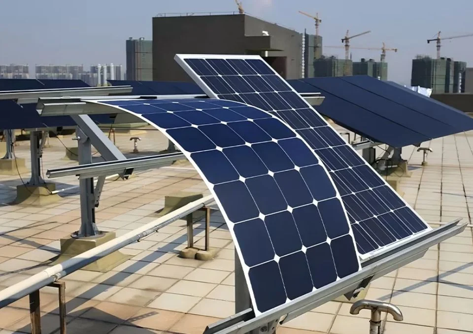
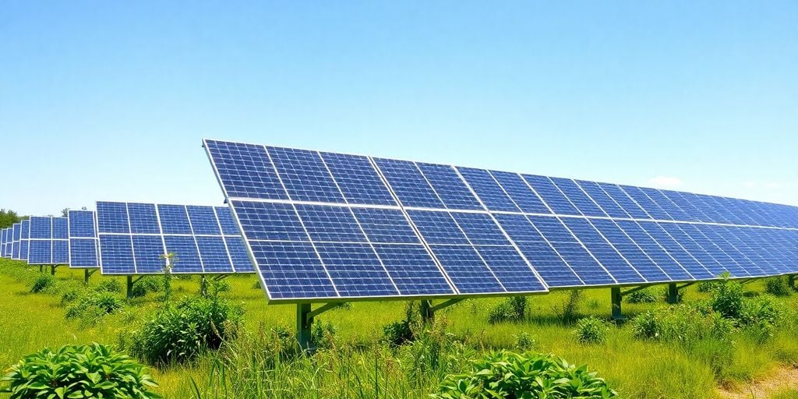
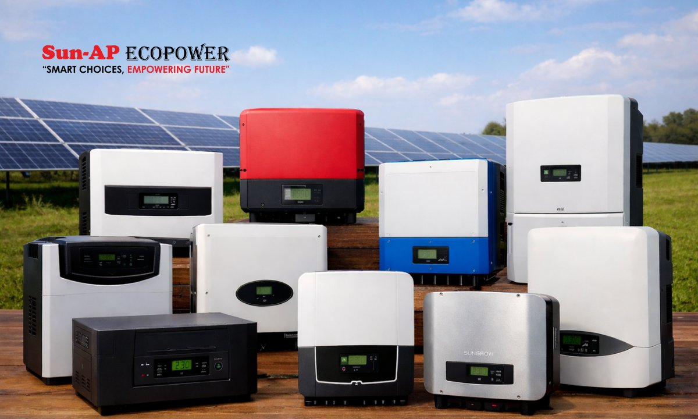
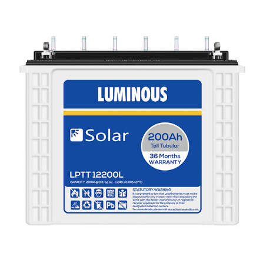
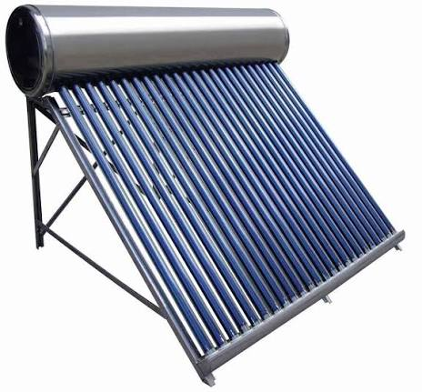
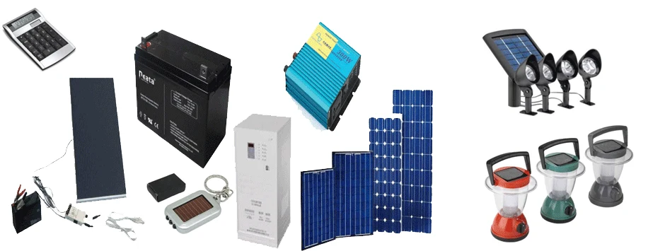

Solar Panels
Types of Solar Panels
1. Monocrystalline Solar Panel
- Made from a single silicon crystal.
- High efficiency (approximately 18–24%).
- Black in appearance.
- Requires less installation space.
- Suitable for residential and commercial use.

2. Polycrystalline Solar Panel
- Made from multiple silicon crystals.
- Efficiency approximately 15–20%.
- Blue in appearance.
- Generally more affordable than monocrystalline panels.
- Suitable for homes and agricultural applications.

3. Thin-Film Solar Panel
- Made using thin layers of photovoltaic materials.
- Lightweight and flexible options available.
- Generally lower efficiency (approximately 10–19%, depending on technology).
- Suitable for large surfaces and special installations.

4. Bifacial Solar Panel
- Generates electricity from both front and rear sides.
- Can capture reflected sunlight.
- Offers additional energy generation depending on installation conditions.
- Suitable for solar farms and commercial projects.

Solar Panel Overview
| Parameter |
Details |
| Product Name |
Solar Panel |
| Technology |
Photovoltaic (PV) |
| Energy Source |
Sunlight |
| Material |
Silicon / Thin-film materials |
| Output |
DC Electricity |
| Installation |
Rooftop / Ground-mounted |
| Usage |
Residential, Commercial, Industrial |
| Lifespan |
Generally 25–30 years or more |
Technical Specifications
| Specification |
Typical Value |
| Rated Power |
400–600 W |
| Module Efficiency |
20–23% |
| Maximum Power Voltage (Vmp) |
30–45 V |
| Maximum Power Current (Imp) |
10–15 A |
| Open Circuit Voltage (Voc) |
37–53 V |
| Short Circuit Current (Isc) |
11–16 A |
| Cell Technology |
Mono PERC / TOPCon |
| Operating Temperature |
-40°C to +85°C |
| Protection |
IP68 junction box (model dependent) |
| Frame |
Anodized Aluminium |
| Front Glass |
Tempered Glass |
Main Features
-
High Efficiency:
Converts sunlight into electrical energy efficiently.
-
Renewable Energy:
Uses sunlight, a natural and renewable energy source.
-
Low Maintenance:
Requires minimal maintenance and periodic cleaning.
-
Long Lifespan:
Designed to operate for 25 years or more.
-
Environment Friendly:
Helps reduce carbon emissions.
-
Weather Resistance:
Designed to withstand outdoor weather conditions.
-
Cost Savings:
Helps reduce electricity bills.
-
Easy Installation:
Can be installed on rooftops or open land.
Warranty Information
Solar panel manufacturers generally provide two types of warranties:
| Warranty Type |
Typical Period |
Coverage |
| Product Warranty |
12–15 years (some offer 20–25 years) |
Manufacturing defects and material failures |
| Performance Warranty |
25–30 years |
Minimum guaranteed power output over time |
Performance Warranty Example
- Initial rated power: 550 W
- First-year degradation: Around 1–2% (model dependent)
- Subsequent annual degradation: Around 0.4–0.55%
- Guaranteed output: Depends on the manufacturer's warranty terms.
Warranty Conditions
- Installation must follow manufacturer guidelines.
- Physical damage and improper handling may not be covered.
- Warranty claims generally require the purchase invoice and product serial number.
- Warranty coverage differs between manufacturers.
Advantages of Solar Panels
- Reduces electricity expenses.
- Reduces dependence on conventional electricity.
- Environmentally friendly energy generation.
- Suitable for remote and rural areas.
- Can be integrated with battery storage.
- Supports sustainable development.
Solar Inverters

Overview
A solar inverter is an essential component of a solar power system that converts direct current (DC) electricity generated by solar panels into alternating current (AC) electricity. AC electricity is used to operate household appliances, commercial equipment and industrial machinery. Solar inverters also manage power generation, monitor system performance and improve energy utilization. Depending on the system design, they can supply electricity directly to connected loads, send excess electricity to the grid or store energy in batteries. Solar inverters are widely used in residential, commercial, industrial and agricultural applications.
Technical Specifications
Solar inverter technical specifications depend on the manufacturer, model and application. A typical residential solar inverter has a rated output capacity ranging from 1 kW to 10 kW. Modern solar inverters offer conversion efficiency between 95% and 99%. They are equipped with MPPT technology to optimize solar energy generation. They also include electrical protection features, cooling systems and monitoring facilities to ensure safe and efficient operation.
| Specification |
Typical Value |
| Product Name |
Solar Inverter |
| Rated Power |
1 kW – 10 kW (Residential) |
| DC Input Voltage |
100 V – 1000 V (Model dependent) |
| AC Output Voltage |
230 V / 400 V |
| Conversion Efficiency |
95% – 99% |
| Output Frequency |
50 Hz |
| MPPT Technology |
1 or More MPPT Channels |
| Power Factor |
Up to 1 (Model dependent) |
| Cooling System |
Natural or Forced Air Cooling |
| Protection Rating |
IP65 / IP66 (Model dependent) |
| Communication |
Wi-Fi / Ethernet / RS485 |
| Operating Temperature |
Generally -25°C to +60°C |
| Display |
LCD / LED Display |
Main Features
- High Conversion Efficiency: Converts DC electricity into AC electricity efficiently.
- MPPT Technology: Maximizes solar energy generation by tracking the optimum operating point of solar panels.
- Smart Monitoring: Allows users to monitor electricity generation and system performance.
- Overload Protection: Provides protection against certain overload conditions.
- Temperature Protection: Helps protect the inverter from excessive operating temperatures.
- Battery Compatibility: Supported models can work with battery storage systems.
- Grid Connectivity: Grid-connected models can supply excess solar electricity to the utility grid.
- Compact Design: Designed for convenient installation and space utilization.
- Low Maintenance: Requires periodic inspection and proper ventilation.
- Safety Protection: Includes protection against short circuits, overvoltage, overcurrent and other electrical faults.
Applications
- Residential: Used in homes to convert solar energy into electricity for lights, fans, refrigerators and other appliances.
- Commercial Buildings: Used in offices, shopping malls, schools and business establishments to reduce electricity expenses.
- Industrial: Installed in factories and manufacturing units to support large electricity requirements.
- Agriculture: Used in solar water pumping systems and irrigation applications.
- Solar Power Plants: Converts solar-generated DC electricity into AC electricity for large-scale power generation.
- Hospitals: Supports solar electricity systems for healthcare facilities.
- Remote Areas: Provides electricity in locations with limited access to conventional power supply.
- Telecommunication: Used in communication towers and remote networking equipment.
- Street Lighting: Supports solar-powered lighting systems.
Warranty Information
Solar inverter manufacturers generally provide a product warranty that covers manufacturing defects, component failures and certain technical issues. The standard warranty period typically ranges from 5 to 10 years, depending on the manufacturer and inverter model. Some manufacturers also offer extended warranty options of 15 to 20 years. Warranty coverage and conditions vary between manufacturers.
| Warranty Type |
Typical Period |
Coverage |
| Product Warranty |
5–10 years |
Manufacturing defects and component failures |
| Extended Warranty |
15–20 years (if available) |
Additional protection according to manufacturer terms |
Warranty Conditions
- Installation must follow manufacturer guidelines.
- Unauthorized repairs or modifications may affect warranty coverage.
- Physical damage, water damage and improper handling may not be covered.
- Proper ventilation and operating conditions must be maintained.
- Warranty claims generally require the purchase invoice and product serial number.
- Warranty coverage differs between manufacturers and models.
Advantages of Solar Inverters
- Converts solar-generated DC electricity into usable AC electricity.
- Helps reduce electricity expenses.
- Improves the utilization of solar energy.
- Supports renewable and clean energy generation.
- Provides real-time system monitoring in supported models.
- Supports battery backup in compatible models.
- Reduces dependence on conventional electricity sources.
- Suitable for residential, commercial and industrial applications.
- Offers various electrical safety and protection features.
- Requires relatively low maintenance.
Conclusion
Solar inverters are essential components of solar power systems because they convert DC electricity generated by solar panels into usable AC electricity. Their high conversion efficiency, smart monitoring capabilities, safety features and battery compatibility make them an important part of modern renewable energy systems. Solar inverters help improve energy utilization, reduce electricity expenses and support sustainable energy development.
Solar Batteries

Overview
A solar battery is an energy storage device used in a solar power system to store excess electricity generated by solar panels for later use. It stores electrical energy in chemical form and supplies electricity when sunlight is unavailable, such as during nighttime or cloudy weather. Solar batteries help provide backup power during electricity outages and improve the overall utilization of solar energy. They can be integrated with compatible solar inverters to support residential, commercial, industrial and agricultural applications. Solar batteries reduce dependence on conventional electricity sources and help ensure a more reliable power supply.
Technical Specifications
Solar battery specifications depend on the manufacturer, battery technology and model. A typical residential solar battery may have a nominal voltage of 12 V, 24 V, 48 V or higher, with storage capacities ranging from 100 Ah to 300 Ah. Battery energy capacity is measured in kilowatt-hours (kWh). Modern lithium-ion solar batteries generally offer a depth of discharge of approximately 80% to 95% and a longer cycle life compared to conventional lead-acid batteries. Other important specifications include charging voltage, discharging current, operating temperature, battery management system and protection features.
| Specification |
Typical Value |
| Product Name |
Solar Battery |
| Battery Voltage |
12 V / 24 V / 48 V |
| Capacity |
100 Ah – 300 Ah |
| Energy Storage |
1.2 kWh – 15 kWh (Model dependent) |
| Battery Technology |
Lithium-ion / Lead-acid |
| Depth of Discharge (DoD) |
80% – 95% (Lithium-ion) |
| Cycle Life |
2,000 – 6,000+ Cycles (Model dependent) |
| Charging Voltage |
Model dependent |
| Charging Current |
Model dependent |
| Battery Management System |
BMS (Lithium-ion models) |
| Operating Temperature |
Generally 0°C to +50°C (Model dependent) |
| Protection |
Overcharge, Over-discharge and Short-circuit Protection |
| Installation |
Indoor / Outdoor (Model dependent) |
Main Features
- Energy Storage: Stores excess electricity generated by solar panels for later use.
- Backup Power: Provides electricity during power outages and nighttime.
- High Efficiency: Offers efficient energy storage and discharge performance.
- Long Cycle Life: Designed to support repeated charging and discharging cycles.
- Battery Management System: Monitors battery performance and protects compatible lithium-ion batteries.
- Overcharge Protection: Helps prevent excessive battery charging.
- Over-discharge Protection: Helps prevent excessive battery discharge.
- Low Maintenance: Many modern battery models require minimal maintenance.
- High Energy Utilization: Helps utilize stored solar electricity when sunlight is unavailable.
- Inverter Compatibility: Can be connected to compatible solar inverters.
Applications
- Residential: Stores solar electricity for household appliances, lighting, fans and other electrical equipment.
- Commercial Buildings: Provides backup electricity for offices, shops and business establishments.
- Industrial: Supports energy storage and backup power requirements in industrial facilities.
- Agriculture: Stores solar energy for irrigation pumps and agricultural equipment.
- Solar Power Systems: Stores excess electricity generated by solar panels for later consumption.
- Hospitals: Supports backup power requirements for essential electrical equipment.
- Remote Areas: Provides electricity in locations with limited access to conventional power supply.
- Telecommunication: Supplies backup power to communication towers and networking equipment.
- Street Lighting: Stores solar energy for operating outdoor lighting systems during nighttime.
Warranty Information
Solar battery manufacturers generally provide product warranties that cover manufacturing defects, material failures and battery performance according to the manufacturer's terms and conditions. Lithium-ion solar batteries commonly come with warranties ranging from 5 to 10 years, while lead-acid battery warranties may vary depending on the product and usage conditions. Some manufacturers also provide performance or energy-throughput guarantees based on the battery's capacity, operating conditions and charging cycles. Actual warranty coverage depends on the manufacturer and model.
| Warranty Type |
Typical Period |
Coverage |
| Product Warranty |
5–10 years (Lithium-ion, model dependent) |
Manufacturing defects and material failures |
| Performance Warranty |
5–10 years (where offered) |
Guaranteed capacity retention or energy throughput under specified conditions |
Warranty Conditions
- Installation must follow manufacturer guidelines.
- The battery must be used with compatible charging equipment and inverters.
- Overcharging, improper handling and unauthorized modifications may affect warranty coverage.
- Recommended operating temperature and charging conditions must be maintained.
- Warranty claims generally require the purchase invoice and product serial number.
- Warranty coverage varies according to the manufacturer, battery technology and model.
Advantages of Solar Batteries
- Stores excess electricity generated by solar panels.
- Provides backup electricity during power outages.
- Helps reduce electricity expenses.
- Improves the utilization of renewable solar energy.
- Reduces dependence on conventional electricity sources.
- Supports energy independence.
- Provides electricity during nighttime and low-sunlight conditions.
- Can be integrated with compatible solar inverters.
- Supports sustainable and environmentally friendly energy usage.
Conclusion
Solar batteries are important components of solar energy systems because they store excess electricity generated by solar panels and make it available when required. They provide backup power, improve energy utilization and reduce dependence on conventional electricity sources. With their energy storage capabilities, long cycle life and compatibility with modern solar systems, solar batteries play an important role in residential, commercial, industrial and agricultural applications. They support reliable electricity supply and promote the use of clean and renewable energy.
Solar Water Heater

Overview
A solar water heater is a renewable energy system that uses sunlight to heat water for domestic, commercial and industrial purposes. It consists of solar collectors, an insulated storage tank, connecting pipes and other supporting components. Solar collectors absorb solar radiation and transfer the heat to water, which is then stored in an insulated tank for later use. Solar water heaters help reduce electricity and fuel consumption by utilizing solar energy as a natural heating source. They are commonly used in homes, hotels, hospitals, hostels, industries and other establishments that require hot water.
Technical Specifications
Solar water heater specifications depend on the manufacturer, collector technology and system capacity. A typical residential solar water heater may have a storage capacity ranging from 100 to 300 litres per day. It generally uses solar collectors with an absorber surface designed to capture maximum solar radiation. Water heating performance depends on sunlight availability, ambient temperature, collector efficiency and storage tank insulation. The system may include an insulated storage tank, corrosion-resistant components, connecting pipes, temperature control arrangements and safety valves. Actual specifications vary according to the model and installation requirements.
| Specification |
Typical Value |
| Product Name |
Solar Water Heater |
| Heating Source |
Solar Energy |
| Storage Capacity |
100 – 300 Litres per Day (Residential) |
| Collector Type |
Flat Plate / Evacuated Tube |
| Collector Material |
Copper / Aluminium / Glass Tubes |
| Absorber Coating |
Selective Absorber Coating |
| Storage Tank Material |
Stainless Steel / Mild Steel with Coating |
| Water Temperature |
Generally 50°C – 80°C (Weather dependent) |
| Tank Insulation |
PUF / Polyurethane Foam |
| Operating Pressure |
Model dependent |
| Installation |
Rooftop / Ground-mounted |
| Heating Efficiency |
Model and weather dependent |
| Backup Heating |
Electric / Auxiliary Heating (Optional) |
Main Features
- Solar Energy Utilization: Uses sunlight to heat water without depending entirely on conventional energy sources.
- Energy Savings: Helps reduce electricity and fuel consumption.
- High Heating Performance: Solar collectors absorb sunlight and transfer heat to water efficiently.
- Insulated Storage Tank: Helps retain hot water temperature for longer periods.
- Eco-Friendly: Reduces carbon emissions by using renewable solar energy.
- Low Operating Cost: Requires no regular fuel consumption for solar heating.
- Corrosion Resistance: Uses suitable corrosion-resistant materials for long-term operation.
- Weather Resistance: Designed for outdoor installation and exposure to different weather conditions.
- Low Maintenance: Requires periodic cleaning and inspection.
- Long Service Life: Designed for long-term use with proper maintenance.
Applications
- Residential: Provides hot water for bathing, washing and other household activities.
- Hotels: Supplies hot water for guest rooms, bathrooms and kitchens.
- Hospitals: Provides hot water for cleaning, washing and other facility requirements.
- Educational Institutions: Used in hostels, colleges and residential schools for hot water supply.
- Industrial: Provides heated water for industrial processes and cleaning applications.
- Restaurants: Supplies hot water for kitchen operations and cleaning.
- Hostels: Meets daily hot water requirements for students and residents.
- Swimming Pools: Helps heat swimming pool water.
- Commercial Buildings: Supplies hot water for offices and other commercial establishments.
Warranty Information
Solar water heater manufacturers generally provide warranties covering manufacturing defects, storage tank performance, solar collectors and other major system components. The warranty period varies according to the manufacturer, product model and materials used. Many manufacturers offer product warranties ranging from 5 to 10 years, while certain components may have different warranty periods. Warranty coverage may include defects in the storage tank, collector components, insulation and associated parts according to the manufacturer's terms and conditions.
| Warranty Type |
Typical Period |
Coverage |
| Product Warranty |
5–10 years (Model dependent) |
Manufacturing defects and material failures |
| Storage Tank Warranty |
5–10 years (Model dependent) |
Tank defects, leakage and corrosion as specified in warranty terms |
| Collector Warranty |
5–10 years (Model dependent) |
Collector-related manufacturing defects |
Warranty Conditions
- Installation must follow manufacturer guidelines.
- Periodic maintenance and cleaning should be performed as recommended.
- Physical damage and improper handling may not be covered.
- Water quality and operating pressure must meet manufacturer recommendations.
- Unauthorized repairs or modifications may affect warranty coverage.
- Warranty claims generally require the purchase invoice and product serial number.
- Warranty coverage varies between manufacturers and models.
Advantages of Solar Water Heaters
- Reduces electricity and fuel expenses.
- Uses free and renewable solar energy.
- Provides hot water for daily requirements.
- Reduces dependence on conventional water heating systems.
- Environmentally friendly and helps reduce carbon emissions.
- Requires relatively low maintenance.
- Helps retain hot water through insulated storage tanks.
- Suitable for residential, commercial and industrial applications.
- Provides long-term energy savings.
Conclusion
Solar water heaters are energy-efficient systems that use sunlight to provide hot water for residential, commercial and industrial requirements. They help reduce electricity consumption, lower operating expenses and promote the use of renewable energy. Their insulated storage tanks, efficient solar collectors and low maintenance requirements make them a practical solution for daily hot water needs. Solar water heaters contribute to energy conservation, environmental protection and sustainable development.
Solar Accessories

Overview
Solar accessories are essential supporting components used in solar power systems to ensure safe installation, efficient operation and reliable energy generation. They include mounting structures, solar cables, connectors, junction boxes, charge controllers, protection devices, fuses, circuit breakers, earthing equipment and monitoring devices. These accessories help connect solar panels, inverters and batteries while providing electrical protection and mechanical support. They improve system safety, durability and performance. Solar accessories are widely used in residential, commercial, industrial and agricultural solar installations.
Technical Specifications
Solar accessory specifications vary depending on the component, manufacturer and solar system requirements. Solar cables are generally designed to withstand outdoor conditions and carry DC electricity safely. Connectors provide secure electrical connections between solar panels and other system components. Mounting structures are manufactured using aluminium or galvanized steel to provide strong support. Protection devices such as fuses, circuit breakers and surge protection devices help protect the system against electrical faults and voltage surges. Other accessories include charge controllers, earthing kits and monitoring equipment that improve system functionality and safety.
| Specification |
Typical Value / Details |
| Product Name |
Solar Accessories |
| Solar Cable Material |
Tinned Copper / Copper |
| Cable Size |
4 mm² / 6 mm² / 10 mm² |
| Cable Voltage Rating |
Up to 1500 V DC (Model dependent) |
| Connector Type |
MC4-Compatible Connectors |
| Mounting Material |
Aluminium / Galvanized Steel |
| Junction Box Protection |
IP65 / IP66 / IP67 (Model dependent) |
| Protection Devices |
Fuse / MCB / DC Isolator / SPD |
| Charge Controller |
PWM / MPPT |
| Earthing Material |
Copper / Galvanized Steel |
| Operating Temperature |
Component dependent |
| Installation |
Indoor / Outdoor |
Main Features
- Electrical Safety: Helps protect solar systems against electrical faults and unsafe operating conditions.
- Durable Construction: Manufactured using materials suitable for long-term solar system operation.
- Weather Resistance: Outdoor-rated accessories are designed to withstand sunlight, rain and environmental conditions.
- Secure Connections: Provides reliable electrical connections between solar system components.
- Mechanical Support: Mounting structures provide stable support for solar panels.
- Overcurrent Protection: Fuses and circuit breakers help protect against excessive current.
- Surge Protection: Surge protection devices help protect equipment against voltage surges.
- Easy Installation: Designed for convenient installation and maintenance.
- System Compatibility: Available in different specifications to match solar panels, inverters and batteries.
- Improved Performance: Supports safe and efficient operation of the overall solar power system.
Applications
- Residential: Used in rooftop solar installations for homes and apartments.
- Commercial Buildings: Supports solar installations in offices, shopping malls and business establishments.
- Industrial: Used in large solar power systems installed in factories and manufacturing units.
- Agriculture: Supports solar water pumps and agricultural solar installations.
- Solar Power Plants: Used for electrical connections, mounting and protection in large-scale solar projects.
- Street Lighting: Supports solar street lights and outdoor lighting systems.
- Educational Institutions: Used in solar installations in schools, colleges and universities.
- Hospitals: Supports solar power systems used in healthcare facilities.
- Remote Areas: Helps connect and protect standalone solar power systems.
Warranty Information
Solar accessory manufacturers generally provide product warranties depending on the accessory type, material quality and manufacturer. Warranty coverage may include manufacturing defects, material failures and certain component-related issues. Electrical accessories, mounting structures, connectors and monitoring devices may have different warranty periods. The warranty generally depends on proper installation, usage conditions and compliance with manufacturer guidelines.
| Warranty Type |
Typical Period |
Coverage |
| Product Warranty |
1–5 years (Model dependent) |
Manufacturing defects and material failures |
| Mounting Structure Warranty |
5–10 years (If offered) |
Structural defects and material-related issues |
| Electrical Accessories Warranty |
1–5 years (Model dependent) |
Component defects and electrical failures |
Warranty Conditions
- Accessories must be installed according to manufacturer guidelines.
- Only compatible components should be used with the solar system.
- Physical damage and improper handling may not be covered.
- Unauthorized repairs or modifications may affect warranty coverage.
- Outdoor accessories should be used within their specified environmental ratings.
- Warranty claims generally require the purchase invoice and product details.
- Warranty coverage varies between manufacturers and accessory categories.
Advantages of Solar Accessories
- Improve the safety and reliability of solar power systems.
- Provide secure electrical connections.
- Protect equipment against electrical faults and voltage surges.
- Provide strong mechanical support for solar panels.
- Improve the durability of solar installations.
- Support efficient energy transmission.
- Make solar system installation and maintenance easier.
- Ensure compatibility between different solar system components.
- Support long-term and reliable solar system operation.
Conclusion
Solar accessories play an important role in the installation, protection and operation of solar power systems. They provide electrical connections, mechanical support and safety protection for solar panels, inverters and batteries. Their durable construction, weather resistance and compatibility with different solar components help improve the overall reliability and performance of solar installations. Solar accessories are essential for residential, commercial, industrial and agricultural solar projects.